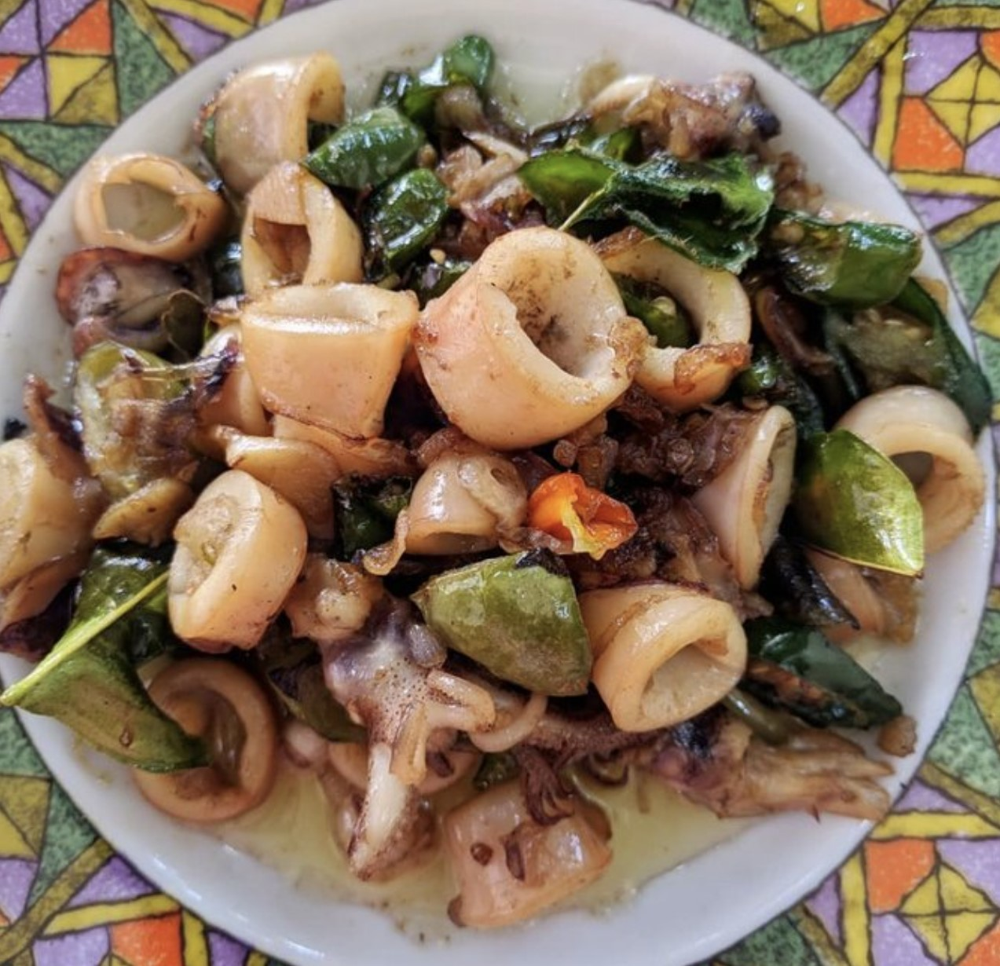

Bahan bahan
- 1 kg cumi ukuran besar cuci bersih kemudian beri sedikit cuka dan garam, potong sesuai selera. Lalu cuci lagi sampai bersih.
- 10 buah cabai keriting merah
- 50 gram daun bawang
- dua ruas jahe
Bumbu
- 5 sdm saus cabai
- 1,5 sdm gula pasir
- 2 sdm cabai rawit halus/uleg. kaldu bubuk secukupnya
- 1/2 sdt lada hitam
Cara Pembuatan
- Tumis bumbu halus sampai matang lalu masukkan cumi. Aduk rata.
- Beri sedikit air (100 ml) kalau sudah mendidih masukkan semua bumbu
- Masukkan saat kuah mulai sedikit surut dan mengental masukkan semua bumbu iris plus petai.
- Aduk-aduk biarkan sebentar lalu angkat dan sajikan